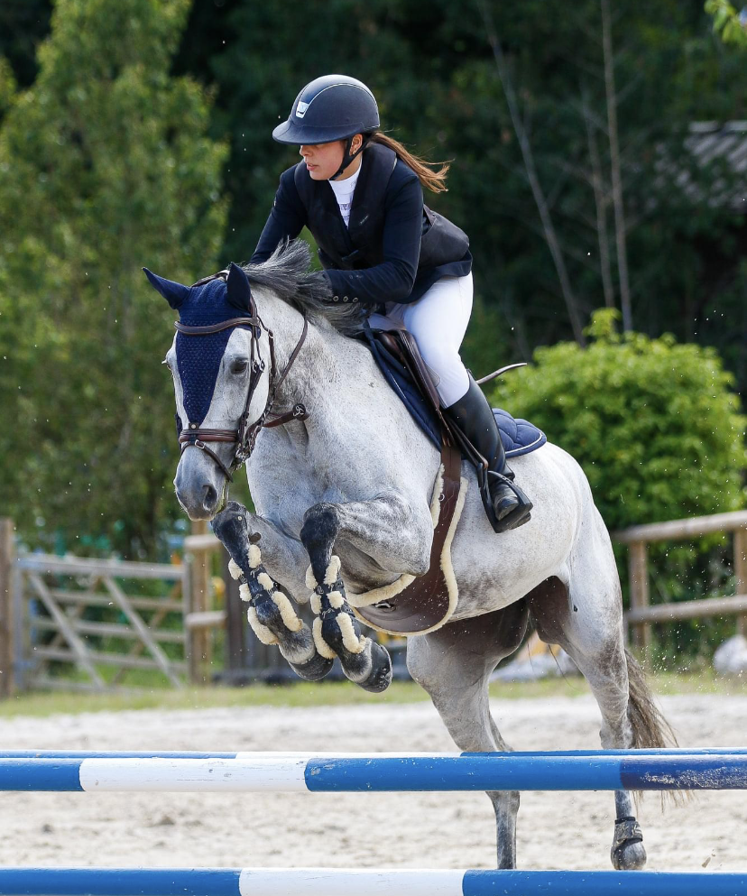

Mon projet
En alliant les nouvelles technologies digitales et mes connaissances dans le monde équestre, je veux développer une plateforme innovante de vente de chevaux. Mais aussi développer des sites web pour les professionnels du cheval (centres équestres, écuries de propriétaires, organisateurs de concours...)
Etudes
* 2020-Aujourd'hui
INSTITUT SOLACROUP
Formation développeur web
* 2017-2019
BTS MUC (Management des Unités Commerciales) au lycée Jacques Cartier St Malo
* 2016-2017
Terminale STMG (Option mercatique)
* 2015-2016
Première STMG CNED
* 2014-2015
Seconde Professionnel équestre - MFR de Landivisiau
CV
* 2017 2019
Stage assistante de gestion dans l'entreprise Wax Beton
* Eté 2016
Gestionnaire de caisse au Domaine des Ormes à Epiniac (vente de glace...)
* 2015 à ce jour
- Gestion de la communication des chevaux à vendre (montages vidéos, réseaux
sociaux)
Gestion de la page Instagram des écuries de Ponthual
* 2014-2015
Groom aux Écuries Ponthual à Saint Lunaire
* 2014-
Stage au haras du Pin dans l atelier sellier bourrelier
* 2013-
Stagiaire Haras du Buot à St Méloir
* 2012-
Stagiaire aux écuries du Launay à Rennes
* 2011-
Stagiaire au centre équestre de Dinard
Hôtesse d accueil au CSI 5*(Concours Sauts International) à Dinard
Compétences, projets réalisés
Permis B + voiture
Imoovie / Mooviemaker
Anglais niveau B2
Maitrise des outils bureautiques standards
Maitrise de la communication via réseaux sociaux
Experience dans la formation des jeunes chevaux
Actuellement je gère la chaîne YouTube (et page Instagram) des écuries de Ponthual. Je film et monte les vidéos des chevaux qui seront ensuite proposés à la vente.
Création d'un mini jeu sur Scatch
Création du site internet "Instant végétal" (en équipe)
En cours d'apprentissage : Language HTML et CSS
Mes réalisations

Photos
Passions
Equitation : Galop 7
Sport, fitness
Guitare
Poker
Voyager
Lelly & Chalimar
Alex & Poupi
Participation aux concours régionaux, nationaux et internationaux
Nouveaux médias, réseaux sociaux, nouvelles technologies
Photos de Voyages

Roma, Collosseo - Italia
Voyages
* Barcelone
* Kobe
* Tokyo
* Milan
* Rome
* Megève
* Bonifacio
* Portoveccio